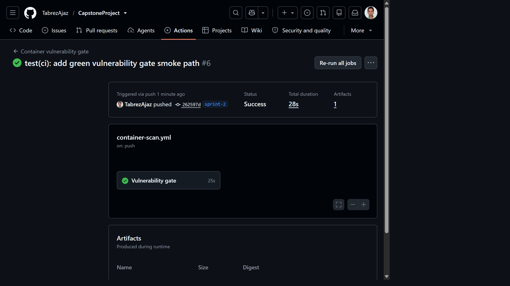
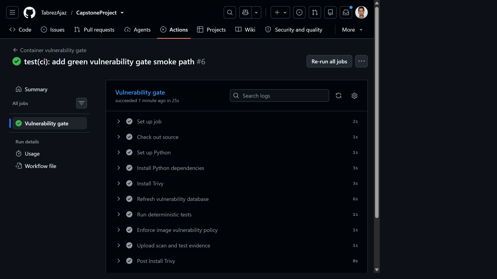
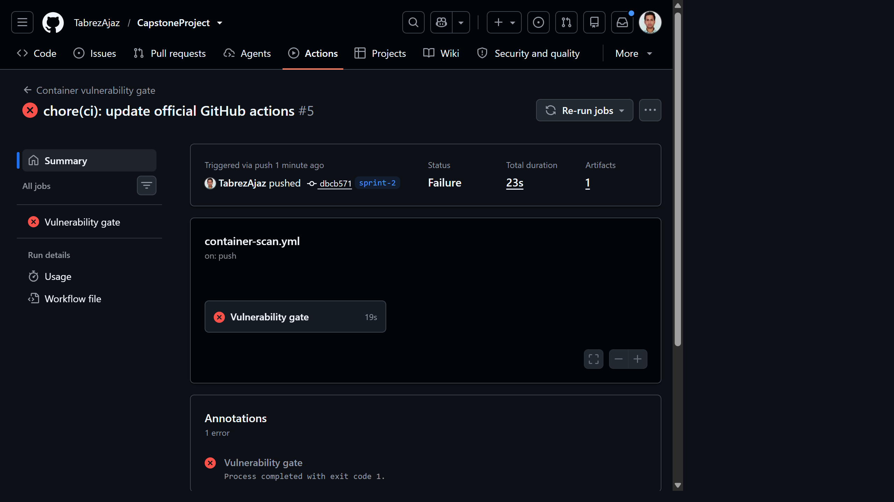
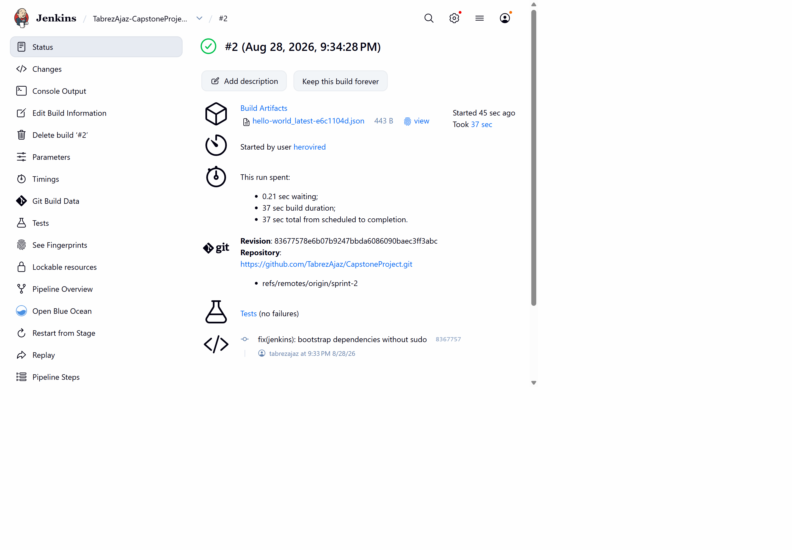
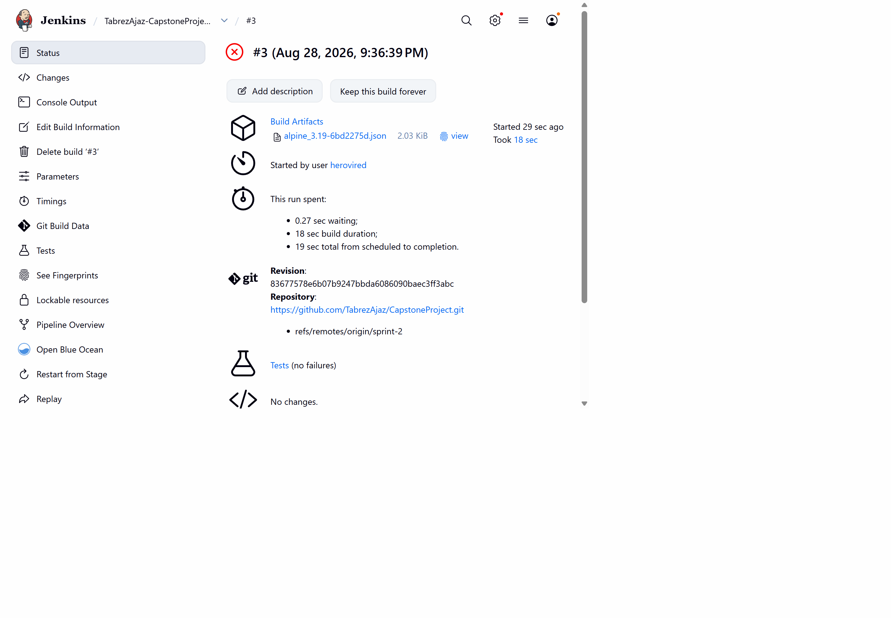
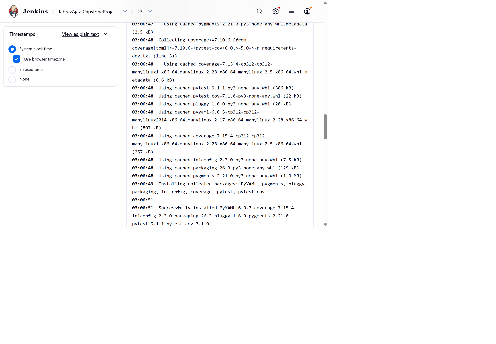

Container Image Vulnerability Scanner with Reporting
CI/CD Vulnerability Gate Integration
One policy engine, deterministic tests, GitHub Actions and Jenkins pipelines, stable build exits, and retained security evidence.
1. Executive Summary
Sprint 2 converts the Sprint 1 scanner into an enforceable CI/CD security gate. A single Python command now resolves configuration, invokes Trivy, saves normalized JSON evidence, evaluates a severity threshold and returns a stable exit status. GitHub Actions and Jenkins call the same command, eliminating policy drift between platforms.
2. Requirement Traceability
| Sprint requirement | Implementation | Status |
|---|---|---|
| Automate new-image scanning in GitHub Actions | .github/workflows/container-scan.yml | VERIFIED |
| Automate scanning in Jenkins | ci/Jenkinsfile, parameterized image and threshold | VERIFIED |
| Fail builds by severity | Python policy evaluates configured minimum severity | VERIFIED |
| Environment-controlled scanning | Eight documented environment variables with strict validation | TESTED |
| Test with sample images | hello-world:latest pass; alpine:3.19 blocked at HIGH | VERIFIED |
3. Architecture and Data Flow
The workflow and Jenkinsfile contain orchestration only. Severity counting and threshold decisions remain in scanner/trivy_scanner.py, so identical inputs produce identical decisions on every CI platform.
4. Policy and Configuration
Settings resolve independently using the following precedence:
CLI option > Environment variable > config.yaml > safe code default
| Variable | Purpose |
|---|---|
SCAN_IMAGE | Image supplied by CI |
SCANNER_FAIL_ON | LOW, MEDIUM, HIGH or CRITICAL threshold |
SCANNER_SEVERITIES | Comma-separated scanned severities |
SCANNER_IGNORE_UNFIXED | Include or suppress findings without fixes |
SCANNER_PKG_TYPES | Package scope, currently OS packages |
SCANNER_TIMEOUT | Bounded Trivy duration |
SCANNER_OUTPUT_DIR | Evidence directory |
SCANNER_CONFIG | Alternative YAML path |
Severity ordering is UNKNOWN < LOW < MEDIUM < HIGH < CRITICAL. With fail_on: HIGH, HIGH and CRITICAL findings block deployment.
5. Stable Exit Contract
| Exit | Meaning | CI result |
|---|---|---|
| 0 | Scan completed and policy passed | Green |
| 1 | Scan completed and threshold was violated | Intentional red gate |
| 2 | Invalid CLI or configuration | Fail closed |
| 3 | Scanner, registry, timeout, parsing or file failure | Fail closed |
Policy exit 1 is deliberately distinct from operational exit 3. This prevents a broken scanner from being mistaken for a clean image.
6. Automated Test Strategy
Sixteen tests execute without Docker, a registry or network access. Mocked subprocess calls and synthetic Trivy fixtures validate command construction, null findings, invalid JSON, missing executables, environment precedence, strict booleans, every policy boundary, artifact creation, all four exit codes and multi-image failure priority.
python -m pytest -q ................ 16 passed
7. GitHub Actions Integration
The workflow supports push, pull request, manual dispatch and reusable workflow invocation. It applies read-only repository permission, cancels superseded runs, installs pinned Trivy, refreshes the database, runs tests, enforces policy, and uploads evidence under if: always().



| Run | Commit | Target/path | Result | Artifact |
|---|---|---|---|---|
| #6 | 262597d | hello-world:latest, HIGH | SUCCESS | vulnerability-evidence-6 |
| #5 | dbcb571 | alpine:3.19, HIGH | POLICY BLOCKED | vulnerability-evidence-5 |
8. Jenkins Integration
The declarative pipeline accepts SCAN_IMAGE and SCANNER_FAIL_ON parameters. It checks out source, creates an isolated virtual environment, verifies Trivy, refreshes the CVE database with retry, runs tests, executes the shared policy gate, publishes JUnit and archives JSON even on failure.
ci/Jenkinsfile from the public sprint-2 branch. Because its Linux agent did not provide python3-venv or Trivy, the pipeline installs Python packages into an isolated workspace target and downloads pinned Trivy 0.74.0 without sudo.
hello-world:latest, published 16 passing tests, and archived the normalized JSON result.
alpine:3.19 at the HIGH threshold while retaining its JSON artifact.
POLICY BLOCKED and exit code 1.9. Security, Reliability and Cost
- Read-only GitHub token permission and no
pull_request_target. - Pinned Trivy and current official action releases.
- No Docker socket mount for registry-reference scans.
- No credentials in image references or repository configuration.
- Configuration is validated and subprocess execution does not use a shell.
- Database caching, concurrency cancellation and 14-day artifact retention limit cost and exposure.
- Open-source Trivy, GitHub-hosted public-repository runners and local Jenkins agents keep incremental cost at zero.
10. Verification Status
| Check | Evidence | Status |
|---|---|---|
| Python syntax and editor diagnostics | No errors | PASS |
| Deterministic test suite | 16/16 passed locally and in GitHub Actions | PASS |
| Green CI path | GitHub Actions run #6 | PASS |
| Blocking CI path | GitHub Actions run #5, exit 1 | PASS |
| Artifacts on red build | vulnerability-evidence-5, expires 11 Sep 2026 | PASS |
| Jenkins green path | Build #2, hello-world:latest, 16 tests, JSON archived | PASS |
| Jenkins blocking path | Build #3, alpine:3.19, 2 HIGH findings, JSON archived | PASS |
11. Conclusion
The Sprint 2 objective is fully operational: container vulnerability policy is enforced automatically, configuration is portable, failures are unambiguous, tests are deterministic and evidence survives blocked builds. Both GitHub Actions and Jenkins are verified end-to-end with genuine green and intentional policy-blocked paths.